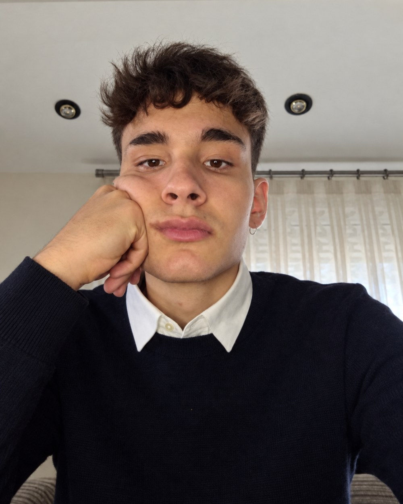
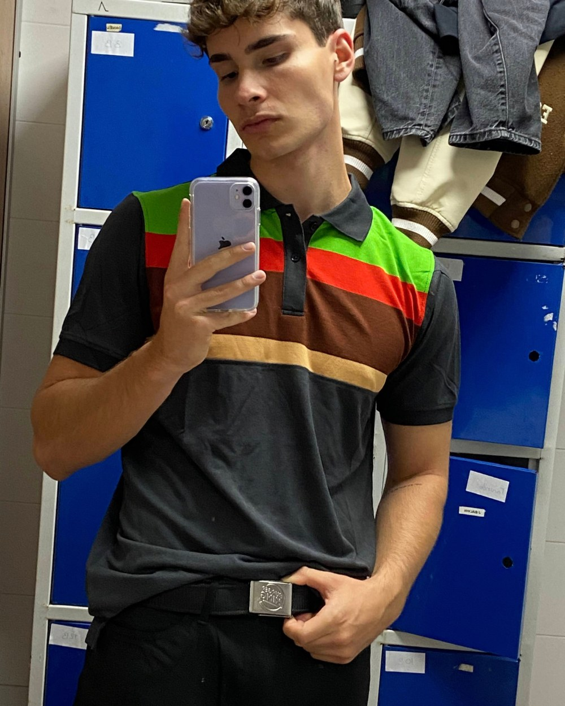
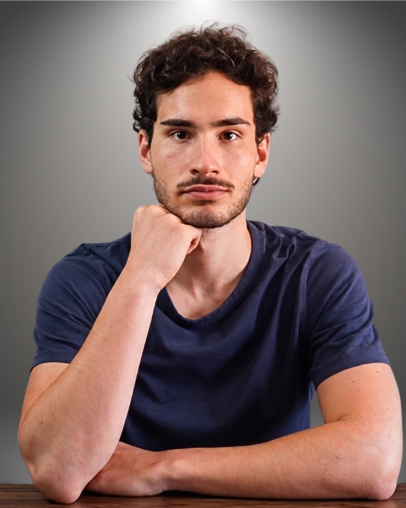
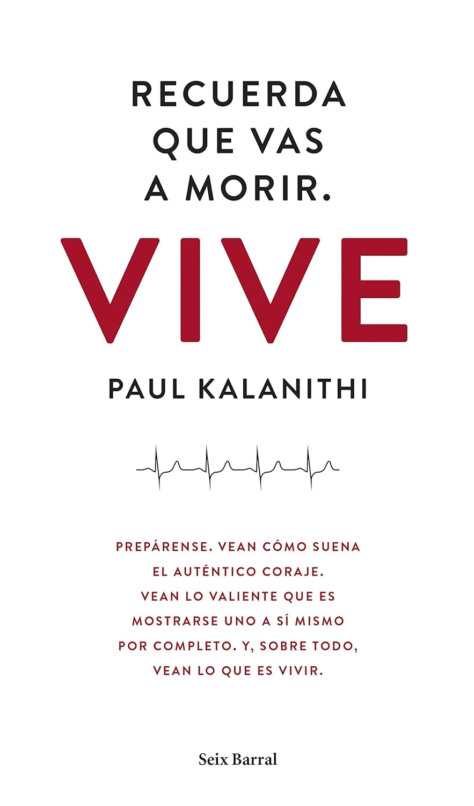
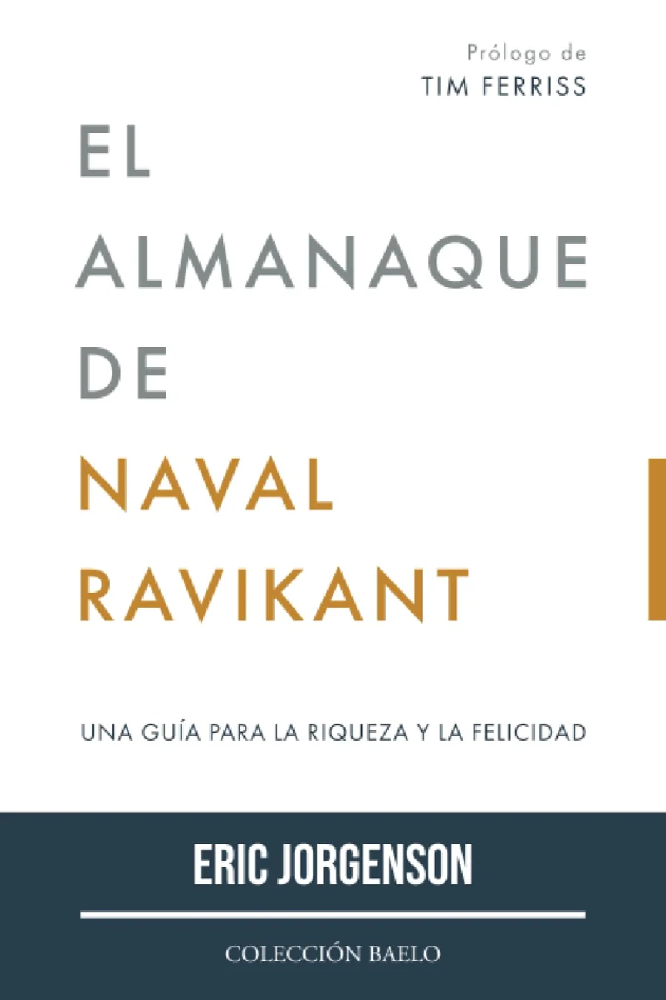
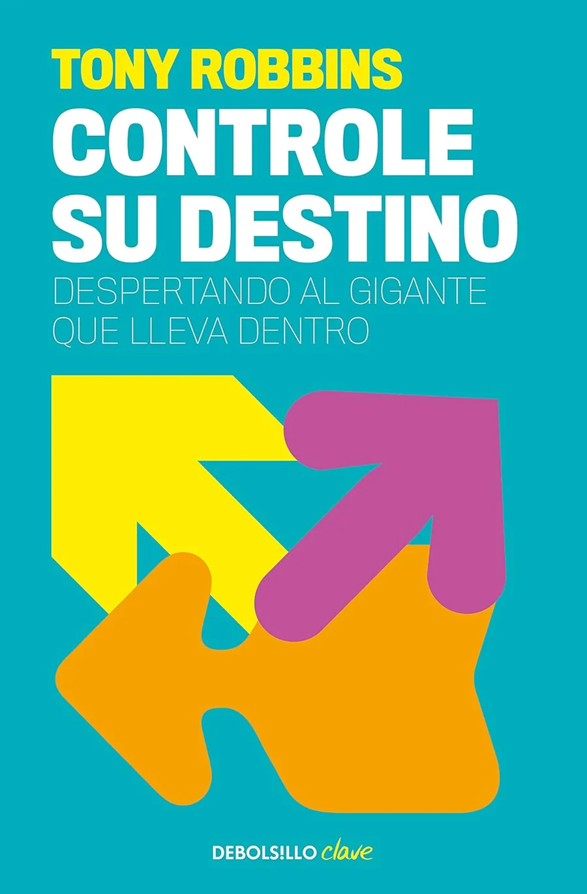

Mi plataforma principal para vídeos más largos y con más profundidad.
Ver mi canal de YouTube → Vídeo destacado
Vídeo destacado6 años de lecciones en 19 minutos (18–24)
Hola, soy Adrián.
Comparto ideas sobre desarrollo personal, filosofía, libros y todo lo que voy aprendiendo mientras construyo mis propios proyectos.
Mi historia
Entre los 16 y los 20 años me dejé llevar bastante por el camino que parecía que había que seguir. Tenía muchas inseguridades, miedo a equivocarme y, sobre todo, miedo a hacer cosas que pudieran provocar el juicio de otras personas.
A los 20 años llegué a un punto de inflexión. Me di cuenta de que estaba viviendo demasiado condicionado por lo que se esperaba de mí y demasiado poco por la persona en la que realmente quería convertirme.
A partir de ahí empecé a cambiar muchas cosas. Dejé la carrera que estaba estudiando porque me di cuenta de que no me gustaba y de que estaba siguiendo un camino que realmente no quería. Empecé a interesarme de verdad por el emprendimiento, el desarrollo personal y el aprendizaje. Durante los siguientes años compaginé trabajo, formación y distintos proyectos mientras aprendía sobre marketing, negocios y, probablemente lo más importante, sobre mí mismo.
Desde entonces he trabajado por mi cuenta, he construido diferentes proyectos y he dedicado una parte importante de mi tiempo a leer, aprender y poner a prueba nuevas ideas.
Hoy sigo haciendo esencialmente lo mismo: construyendo mis propios proyectos, intentando mejorar y compartiendo por el camino aquello que creo que merece la pena transmitir.

18
20
24Contenido
Vídeo destacadoRecomendaciones
Los libros que más me han aportado y que realmente recomendaría.

Uno de los mejores libros que he leído y uno de los que más impacto ha tenido en mi vida.

Una guía sobre cómo construir una vida feliz y exitosa a partir de las ideas de Naval Ravikant.

El libro que más me ayudó a dejar la carrera y a visualizar la vida que realmente quería.
En Goodreads puedes ver todas mis lecturas, valoraciones y lo que estoy leyendo actualmente.
Seguirme en Goodreads →Los podcasts y episodios que considero que merece la pena escuchar.
 0144 duras verdades sobre la naturaleza humana — Naval Ravikant
0144 duras verdades sobre la naturaleza humana — Naval RavikantPara mí, el mejor podcast que he escuchado hasta la fecha. Lo he escuchado más de cinco veces; lo poco que aparece Naval en este formato hace que sea especialmente valioso.
 02Así es como puedes dominar tu vida — David Goggins
02Así es como puedes dominar tu vida — David GogginsUn clásico al que vuelvo cuando necesito motivación. La mentalidad de David y su determinación incluso después del éxito me parecen admirables.
 0333 verdades brutales para dejar de desperdiciar tu potencial — Alex Hormozi
0333 verdades brutales para dejar de desperdiciar tu potencial — Alex HormoziMe encanta porque refleja muchas de mis fases de emprendimiento y mi forma de afrontar la adversidad y distintas situaciones de la vida.
Una selección de vídeos de YouTube que considero que merece la pena guardar y ver con calma.
Creadores, emprendedores, pensadores y otras personas cuyo trabajo sigo habitualmente.
Proyectos

Un asistente de IA para negocios que automatiza la gestión de citas, reservas y atención al cliente a través de WhatsApp.
Desde hace varios años trabajo por mi cuenta ayudando a negocios locales a generar clientes potenciales mediante campañas de Facebook e Instagram.